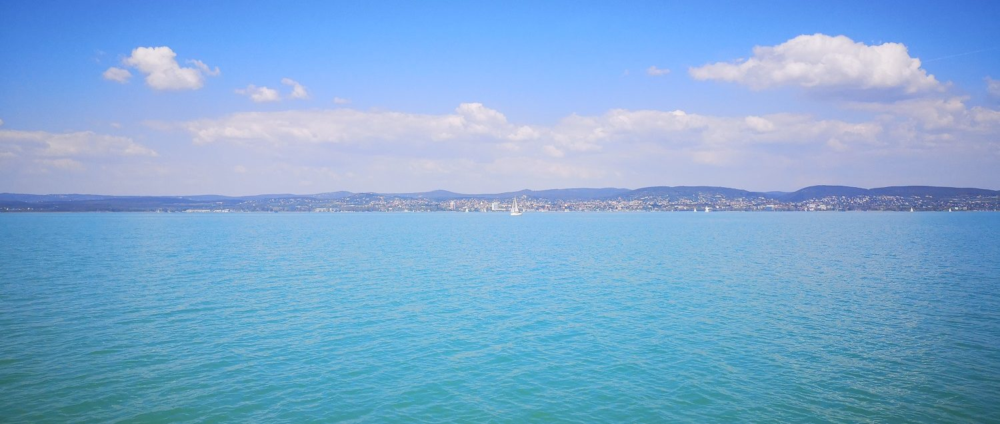
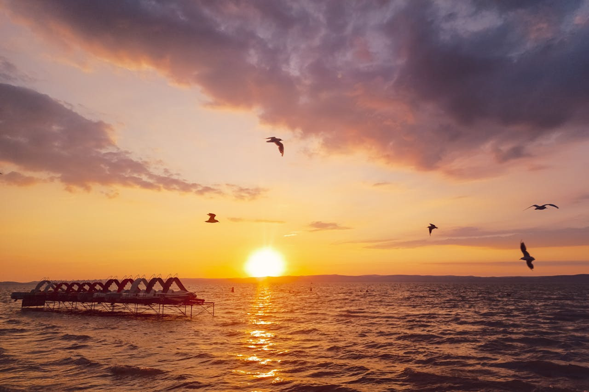
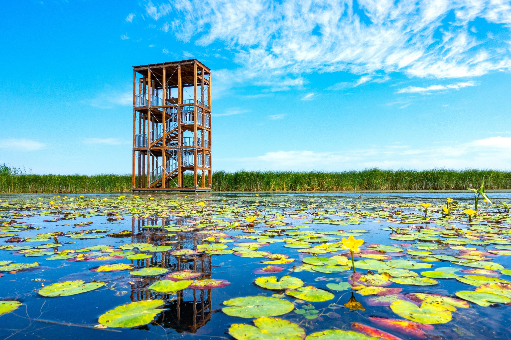
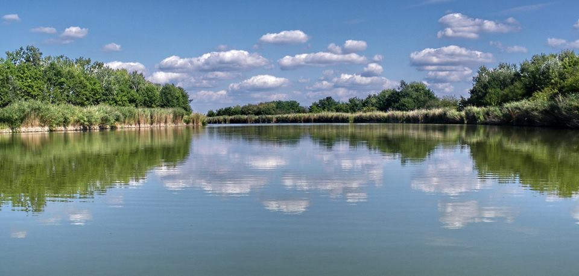

Balaton A Balaton (latinul Lacus Pelso, németül Plattensee, szlovénul Blatno jezero, szlovákul Blatenské jazero), becenevén a „magyar tenger” Közép-Európa legnagyobb tava. Típusa a Fertő tóhoz hasonlóan sztyeppei tó, ezek Eurázsia legnyugatabbra fekvő ilyen jellegű tavai. 77 km hosszú, szélessége 1,5-12,8 km között ingadozik, átlagosan 7,8 km, felülete 594 km². Keleti medencéjét a Tihanyi-félsziget választja el a tó többi részétől. Déli partjánál medre sekélyebb. Északi oldalán található a badacsonyi borvidék és a Tapolcai-medence, jellegzetes vulkáni tanúhegyeivel. A tó egyes részein halászat folyik. Siófok és Sármellék mellett repülőterek vannak. A Balaton és környéke Budapest mellett az ország turisztikailag leglátogatottabb területe. Környékén gyógyfürdők, termálforrások találhatók. A tavon minden évben megrendezik a Kékszalag Nemzetközi Vitorlás Versenyt.

Tisza-tó A Tisza-tó (1988-ig Kiskörei víztározó) Magyarország második legnagyobb tava és legnagyobb mesterséges tava a Tiszán, az Alföld északi részén. Létrehozásának legfontosabb okai a Kiskörei Vízerőmű működéséhez szükséges egyenletes vízhozam biztosítása volt, valamint az ugyanebben az időszakban, Tiszaújvárosban épült Tiszai Hőerőmű hűtővíz igényéhez szükséges magas vízszint biztosítása duzzasztással.

Szelidi-tó A Szelidi-tó 5 kilométer hosszú, 150–200 méter széles, 3–4 méter mély, vízfelülete megközelítőleg 80 hektár, ezzel hazánk ötödik legnagyobb természetes tava. Bács-Kiskun vármegye Kalocsai járásában, Dunapataj nagyközség külterületén található, mintegy 3 kilométerre Újtelek községtől északra, a Dunapatajt Szakmáron át Kalocsa keleti részeivel összekötő 5308-as útról letérve közelíthető meg. A tó déli partján, nyugalomba jutott futóhomok területein kellemes strandok kerültek kialakításra.